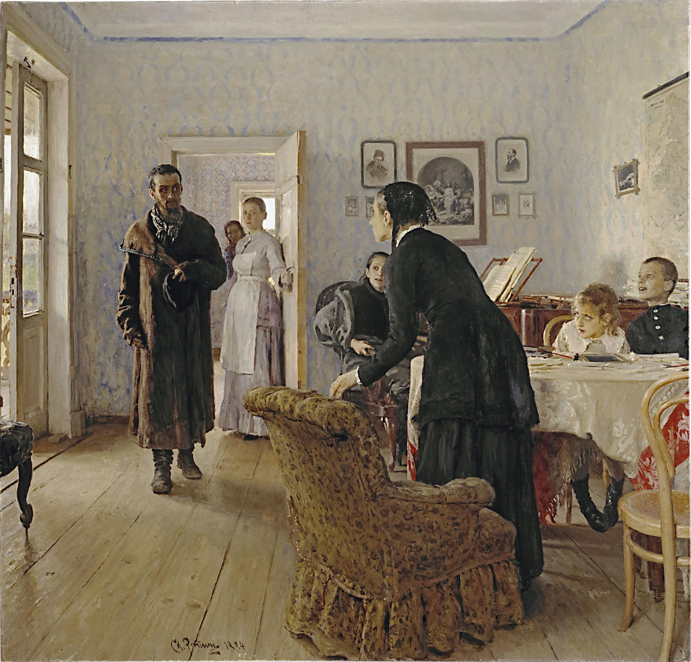
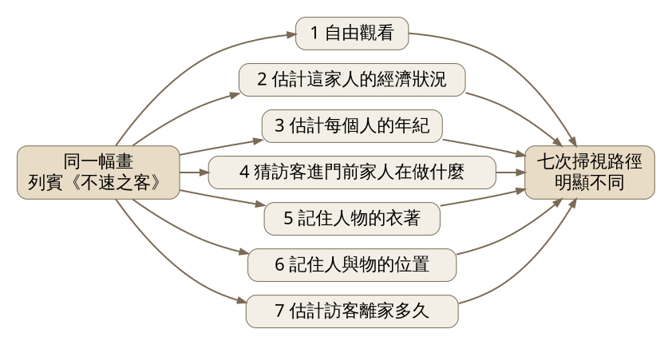
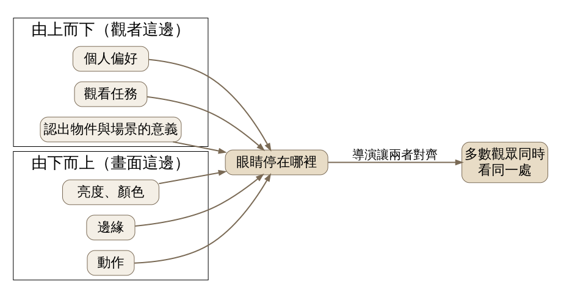
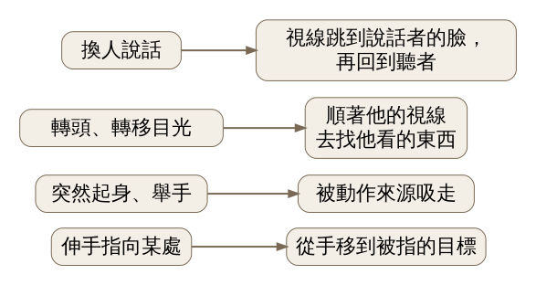

眼睛看一張畫，不是從左上掃到右下，而是跳著走，停在少數幾個點上；停在哪裡，一半由畫面決定，一半由你心裡帶著的問題決定。這堂課用 Yarbus 的眼動實驗，看電影導演怎麼在一個不剪接的長鏡頭裡，讓十一個觀眾的眼睛幾乎同時看向同一個地方。
史料 在莫斯科，生理學家 Alfred Yarbus（1914–1986）為了記錄眼睛的動作，做了一種貼在眼球上的小吸盤，上面附著鏡片。光打到鏡片上反射到底片，眼球一轉，光點就在底片上畫出一條線。吸盤戴起來並不舒服，最早的版本出自 Vadim Chernishev，Yarbus 改良出好幾種設計，他的書裡就討論了八種。
他最常被引用的一次實驗，用的是俄國畫家列賓（Ilya Repin）的油畫《不速之客》（Unexpected Visitors，1884–1888）（見圖 1）。畫裡一個衣衫破舊的男人剛走進客廳，坐著的老婦人站起來，桌邊的孩子轉頭看他，鋼琴旁的女子愣住。Yarbus 請同一位受試者看這幅畫七次，每次約三分鐘，每次開始前給一個不同的指示。七次留下的軌跡差別很大。
這本書 1965 年以俄文出版，1967 年由 Basil Haigh 譯成英文《Eye Movements and Vision》，對後來的眼動研究影響很大。（依二手文獻：Tatler 等人 2010 年於《i-Perception》的回顧文章）

圖 1｜列賓《不速之客》，油畫，1884–1888，莫斯科特列季亞科夫畫廊藏（館藏號 740）。Yarbus 用這幅畫做了七種指示的眼動實驗。來源：Ilya Repin，Unexpected Visitors，1884–1888。授權：Public domain，來源頁面
實證研究 Yarbus 的七個指示依序是：自由觀看；估計這家人的經濟狀況；估計每個人的年紀；猜訪客進門前這家人在做什麼；記住人物的衣著；記住人和物在房間裡的位置；估計訪客離家多久（見圖 2）。同一幅畫、同一雙眼睛，問題一換，視線停留的地方就跟著換。問年紀，眼睛就集中在臉上；要記住擺設，視線就散到整個房間。

圖 2｜Yarbus 實驗的設計：同一幅畫，七種指示，各留下一條不同的掃視路徑。來源：本課程依 Yarbus《Eye Movements and Vision》1967 及 Tatler et al. 2010 的整理繪製。
他從這些紀錄裡歸納出兩件事。第一，眼睛不會平均掃過畫面，而是在少數「含有資訊」的地方反覆停留，看人像時多半停在眼睛和嘴巴。第二，觀看者帶著的任務會改變這些停留點。後來的研究者把第二點稱為「由上而下」的控制。
實證研究 Yarbus 的原始資料只有一位受試者。DeAngelus 與 Pelz（2009，《Visual Cognition》）用現代眼動儀和多位受試者重做，Tatler 等人（2010）則請 20 位英國鄧迪大學的學生看一張 Yarbus 本人的肖像照，每次 50 秒，同樣給七個指示，最後有 18 人的資料可用。兩次重做大致支持 Yarbus 的發現：問年紀時看臉，要求記住全部時視線鋪滿整張圖。不過 Tatler 團隊也發現個人之間差異很大，Yarbus 描述的「在眼、嘴之間循環掃視」並不是每個人都有。
實證研究 心理學家 Tim J. Smith 把這條路線帶進電影。他在〈The Attentional Theory of Cinematic Continuity〉（《Projections》，2012）裡說，眼睛停在哪裡，由兩股力量拉扯決定：畫面這邊的亮度、顏色、邊緣和動作，是「由下而上」；觀眾這邊的偏好、任務，以及認出眼前是什麼東西、什麼場景，是「由上而下」（見圖 3）。導演要做的，是讓「導演想讓你看的地方」和「你自己想看的地方」對齊。對齊成功時，許多觀眾會在同一刻看向同一點，Smith 稱之為 attentional synchrony（注意力同步）。

圖 3｜注視位置由兩股力量共同決定；兩者對齊時，多數觀眾會同時看同一處。來源：本課程依 Smith，〈The Attentional Theory of Cinematic Continuity〉，2012 繪製。
實證研究 Smith 在同一篇論文裡分析了 Paul Thomas Anderson 導演的《黑金企業》（There Will Be Blood，2007）。片中有一段幾乎不動的長鏡頭：年輕人 Paul 走進石油商 Daniel Plainview 的辦公室，幾個人圍著桌上的地圖，Paul 指出他家農場的位置。整段沒有剪接，沒有特寫告訴你該看誰。Smith 用 Eyelink 1000 眼動儀記錄 11 位觀眾，把每個人的注視點疊回畫面上。
結果是一張很「整齊」的地圖。換人說話時，大家的視線跳到說話者臉上，接著又移回聽的人，去看他怎麼反應。有人轉頭，觀眾就順著他的視線方向找過去。有人突然起身或舉手，視線被動作吸走。Paul 伸手指向地圖，觀眾的眼睛從他的手滑到他指的那一點（見圖 4）。Smith 把每一次眼跳看成一個小問題：誰在說話？他在看什麼？剛剛什麼動了？他指著哪裡？

圖 4｜《黑金企業》地圖場景中，四種場面調度的提示與觀眾視線的反應。來源：本課程依 Smith，〈The Attentional Theory of Cinematic Continuity〉，2012，Figure 2 的說明繪製。
前一個鏡頭也有一個小例子。Paul 進門時，畫面右上角有一盞亮燈。Paul 開口說話，多數人就不看燈，只看他。等他的頭移出畫面，觀眾先退回畫面中央，接著被突然露出來的檯燈抓走。亮度在搶，人臉也在搶，哪一邊贏，看那一刻有沒有人在說話。
Smith 為 David Bordwell 的網站寫的長文〈Watching you watch There Will Be Blood〉（2011）補了一個細節：同一場戲裡，Daniel 一度背對鏡頭，大家想看的那張臉不見了，視線就轉向他的兒子 H.W.；另一個角色 Fletcher 只輕輕瞥了 Daniel 一眼，11 人裡只有 3 人跟著看過去，其他人仍盯著 Paul。這說明導演的提示有強有弱，一個瞥眼不夠拉動全場。
這部電影仍受著作權保護，本課不放劇照。Smith 在論文註腳公開了這段場景的眼動影片：vimeo.com/19788132，可以看到綠色的注視點怎麼在幾張臉之間成群移動。
回到列賓的《不速之客》。電影靠聲音和動作一步步牽著視線，一幅畫沒有時間軸，所有提示同時擺在那裡：站起來的老婦人、轉頭的孩子、門口的女僕，每個人的臉都朝向那個男人，像好幾支箭指向同一點。Yarbus 的自由觀看紀錄裡，軌跡最密的地方多半落在人物的臉上，正是畫家用姿勢與朝向安排好的地方。
但換一個問題，例如「這家人有錢嗎」，視線就會離開臉，去找家具、牆上的畫、衣服的質料。畫家能決定「哪裡值得看」，觀眾帶進來的問題決定「先看哪裡、看多久」。電影導演可以用剪接和對白不斷重新出題，畫家只能出一次題，剩下交給觀眾。
誤解一：「看一個人的眼動，就能讀出他在想什麼。」Yarbus 的圖常被拿來這樣說。實證研究 Greene、Liu 與 Wolfe（2012，《Vision Research》）讓 16 位受試者在四種任務下看 64 張圖，再訓練分類器從眼動資料反推任務。四選一的猜中率是 27.1%，和亂猜的 25% 差不多，作者認為單憑掃視路徑不足以推斷複雜的心理狀態。Borji 與 Itti（2014，《Journal of Vision》）重新分析同一批資料，換了方法，猜中率提高到 34.12%（隨機為 25%），略高於隨機但統計上顯著。任務確實影響眼動，但從眼動倒推任務，到目前仍很不可靠。
誤解二：「Yarbus 證明了每個人都這樣看畫。」原始實驗只有一位受試者，人像的部分也只來自少數幾次紀錄。多人重做（DeAngelus 與 Pelz 2009；Tatler 等人 2010）大致支持任務效應，同時看到不小的個別差異。所以比較準確的說法是：任務會改變大多數人的視線分佈，但每個人的路徑不會相同。
看（5 分鐘） 在通勤路上或便利商店，找一張有人物的海報。不要刻意控制，讓眼睛自己看三秒，然後閉上眼睛，回想眼睛第一個、第二個停在哪裡。再睜開，找出畫面裡讓你停在那裡的原因：一張臉、一個最亮的地方，還是一個手勢？
做（10 分鐘） 找一位家人或朋友，準備一張家庭合照或報紙上的照片。請對方看兩次，每次 20 秒。第一次問「照片裡的人大概幾歲？」，第二次問「記住每樣東西擺在哪裡」。你坐在對面，用手機前鏡頭錄下對方的眼睛，或直接觀察，用紙筆在照片影本或速寫上依序標出他的眼睛轉向的位置，畫成兩條路徑。換你看一次，請對方記錄你。
回顧（5 分鐘）
來源 | 類型 | 查核日期 |
Tatler, Wade, Kwan, Findlay & Velichkovsky，〈Yarbus, eye movements, and vision〉，《i-Perception》1(1): 7–27，2010（含 Yarbus 生平、1965/1967 出版資訊、七個指示與重做實驗） | 實證研究；史料（依二手文獻） | 2026-11-09 |
Yarbus, A. L.，《Eye Movements and Vision》，Basil Haigh 譯，Plenum Press，1967（未見原書，內容依上列 Tatler 等人 2010） | 實證研究（依二手文獻） | 2026-11-09 |
Smith, T. J.，〈The Attentional Theory of Cinematic Continuity〉，《Projections》6(1): 1–27，2012，DOI 10.3167/proj.2012.060102 | 實證研究 | 2026-11-09 |
Smith, T. J.，〈Watching you watch There Will Be Blood〉，David Bordwell's website on cinema，2011-02-14 https://www.davidbordwell.net/blog/2011/02/14/watching-you-watch-there-will-be-blood/ | 實證研究（研究者撰寫的先導研究說明） | 2026-11-09 |
Smith 論文所附《黑金企業》眼動影片 | 實證研究（資料影片） | 2026-11-09 |
Greene, Liu & Wolfe，〈Reconsidering Yarbus: A failure to predict observers' task from eye movement patterns〉，《Vision Research》，2012 | 實證研究 | 2026-11-09 |
Borji & Itti，〈Defending Yarbus: Eye movements reveal observers' task〉，《Journal of Vision》，2014 | 實證研究 | 2026-11-09 |
DeAngelus & Pelz，〈Top-down control of eye movements: Yarbus revisited〉，《Visual Cognition》17(6/7): 790–811，2009，DOI 10.1080/13506280902869213（未見全文，依期刊參考文獻條目與 Tatler 等人 2010） | 實證研究（依二手文獻） | 2026-11-09 |
圖 1 授權頁面：Ilya Repin，Unexpected Visitors，Wikimedia Commons https://commons.wikimedia.org/wiki/File:Ilya_Repin_Unexpected_visitors.jpg | 史料（圖片，Public domain） | 2026-11-09 |